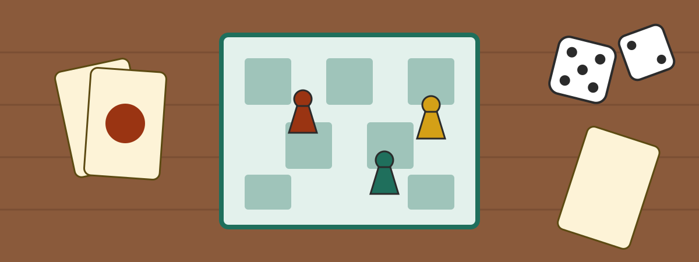

Neues Spiel im Regal: Flügelschlag
Seit dieser Woche steht Flügelschlag in unserem Regal. Es geht um Vögel, Eier und Futter, und es ist viel spannender, als das klingt.
Wer es lernen will: Am Freitag erklärt Mira die Regeln.
Willkommen beim Brettspielclub Würfelglück! Wir treffen uns jeden Freitag ab 19 Uhr im Gemeindehaus und spielen alles, was auf einen Tisch passt.
Neu hier? Komm einfach vorbei, anmelden musst du dich nicht.

Seit dieser Woche steht Flügelschlag in unserem Regal. Es geht um Vögel, Eier und Futter, und es ist viel spannender, als das klingt.
Wer es lernen will: Am Freitag erklärt Mira die Regeln.
Zwölf Leute, vier Spiele, ein Pokal. Gewonnen hat Jonas, ganz knapp vor Lea.
Danke an alle, die Kuchen mitgebracht haben!
Ab November öffnen wir jeden ersten Sonntag im Monat schon um 15 Uhr. Dann gibt es Spiele für Kinder ab sechs Jahren und Kakao für alle.